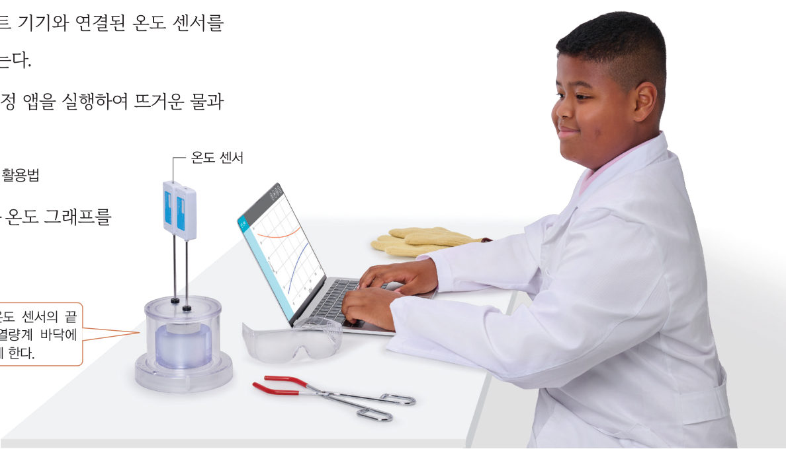
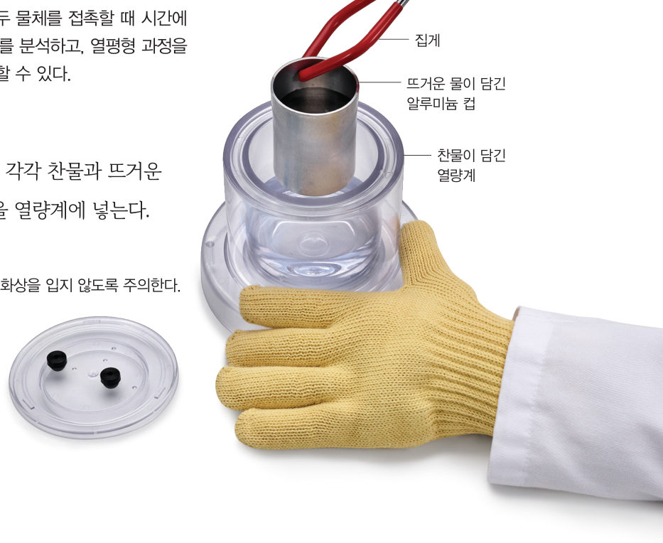

교과서의 MBL 온도 센서 대신 아두이노와 LM35·써미스터 온도 센서로 뜨거운 물과 찬물의 온도를 동시에 측정하고, 실험 보고서를 완성하자.
준비물 아두이노 UNO, USB 케이블, LM35 온도 센서, 써미스터(10 kΩ)와 10 kΩ 저항(또는 아날로그 온도 센서 모듈), 브레드보드, 점퍼선, 랩(또는 열수축 튜브), 열량계, 알루미늄 컵, 뜨거운 물(약 70 ℃), 찬물, 전자저울, 알코올 온도계, 노트북(크롬), 보안경, 내열 장갑

| 처음 온도(℃) | 나중 온도(℃) | 온도 변화(℃) | |
|---|---|---|---|
| 🔴 뜨거운 물 | - | ||
| 🔵 찬물 | - |
| 평가 항목 | 잘함 | 보통 | 노력 필요 |
|---|---|---|---|
| 아두이노와 센서를 안전하게 연결하고 측정했다. | |||
| 그래프를 해석하여 열평형 과정을 설명했다. | |||
| 모둠원과 역할을 나누어 협력했다. | |||